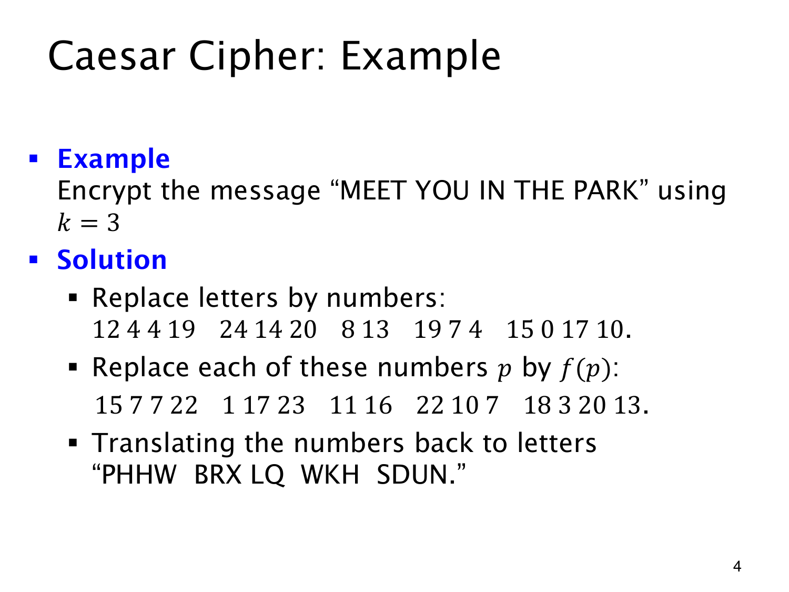

L1.14 · 第 4 页讲解原文
查看这一页课件

将 MEET YOU IN THE PARK 平移三位
用 k=3 加密 MEET YOU IN THE PARK，先按 A=0 至 Z=25 编码：
12 4 4 19 | 24 14 20 | 8 13 | 19 7 4 | 15 0 17 10
每个数加 3，再模 26：
15 7 7 22 | 1 17 23 | 11 16 | 22 10 7 | 18 3 20 13
换回字母得到 PHHW BRX LQ WKH SDUN。例如 M 的 12 变成 15，对应 P；Y 的 24 加 3 后为 27≡1(mod26)，对应 B。
解密 B 时，1−3=−2，须取 −2mod26=24 才恢复 Y。负数也按标准余数处理，不能直接丢弃。
这个例子保留空格和单词长度，密文仍泄露这些结构。明文中连续两个 E 也变成连续两个 H，固定平移保留了相同字母的重复模式。